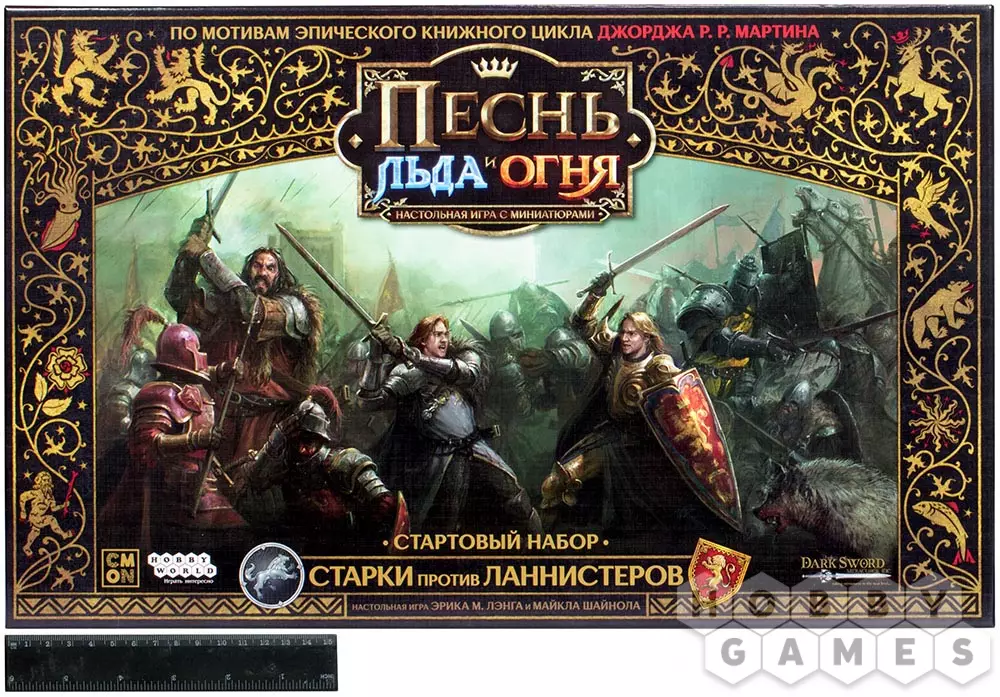

Игра Престолов: Песнь льда и огня
Миниатюрный варгейм по вселенной «Песни льда и огня» Джорджа Мартина. Соберите армию великого дома Вестероса, расставьте миниатюры на поле боя и командуйте отрядами в сражениях за земли и честь. Решения полководца, расстановка войск и отрядные тактики решают исход битвы не меньше, чем интриги при дворе.
Правила игры
Посмотрите видео и почитайте PDF — и можно за стол!
Видео-правила
Полные правила и сценарии — в правилах базовой игры и приложениях издателя.
Дополнения
Расширения из коллекции Таверны:
Гвардейцы Ланнистеров
Дополнение к игре «Песнь льда и огня»: закованные в золото гвардейцы Льва.
Страница дополненияБерсерки Амберов
Дополнение к игре «Песнь льда и огня»: неистовые топорники дома Амберов.
Страница дополненияВерные Мечи Старков
Дополнение к игре «Песнь льда и огня»: проверенные в бою воины Севера.
Страница дополненияЛюди Горы
Дополнение к игре «Песнь льда и огня»: свирепые клановцы горных племён.
Страница дополнения